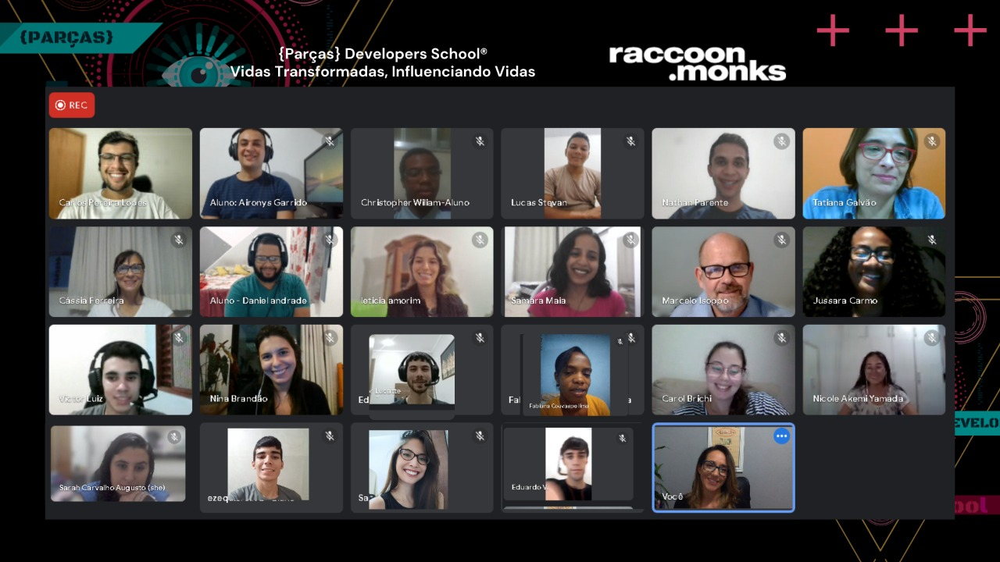

Sobre nós
A {Parças} Developers School® se propôs a reescrever a realidade carcerária brasileira. Fazemos isso selecionando talentos egressos do sistema penitenciário, de áreas urbanas periféricas e os empregando no mercado de trabalho de tecnologia da informação.
Para os talentos, por meio da nossa plataforma EAD e com o acompanhamento técnico e pessoal, oferecemos treinamentos que variam de 4 a 12 meses de duração e certificações de órgãos reguladores antes de serem empregados.
Para as empresas, oferecemos talentos altamente capacitados de acordo com as habilidades, tecnologias, linguagens e senioridade que elas necessitam.
A {Parças}™ te convida a se engajar na concepção de uma nova realidade possível, alavancando soluções que colaboram diretamente com a redução de problemáticas sociais.

Nosso curso
A formação da {Parças}™ é 100% online. Ou seja, você pode estudar conosco de onde estiver! Basta garantir uma internet de boa qualidade, ambiente adequado para os estudos, computador, disponibilidade de tempo para estudar conosco de segunda a sexta-feira e finais de semana, e dependendo do seu ritmo de aprendizagem, tempo para se dedicar mais em outros horários;